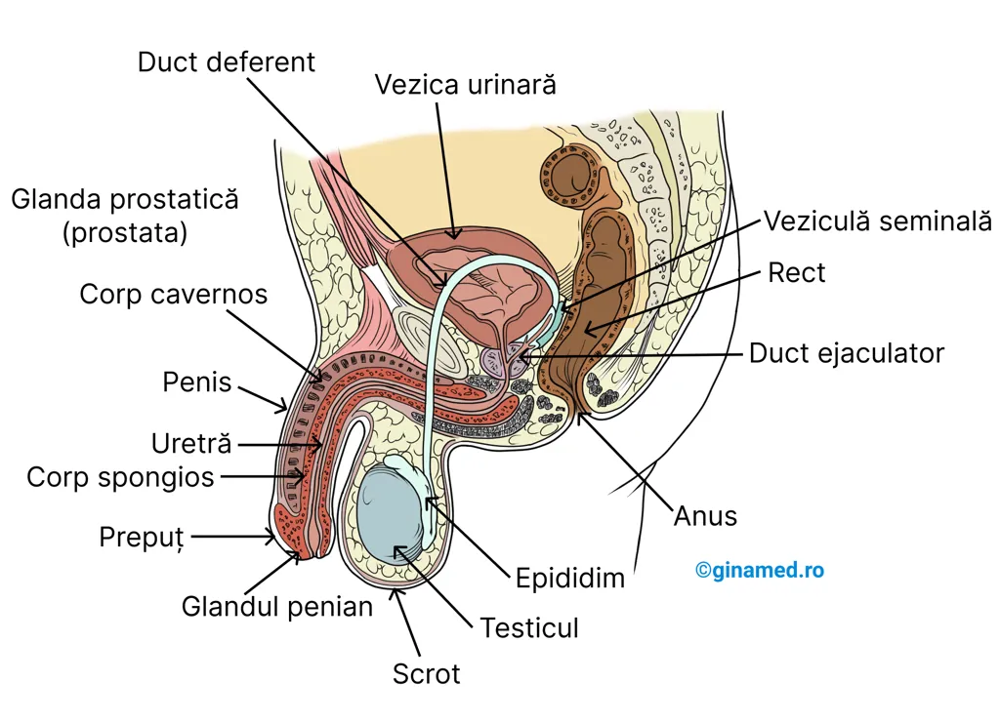
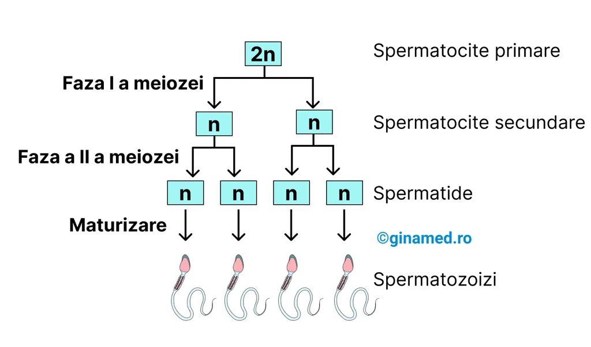
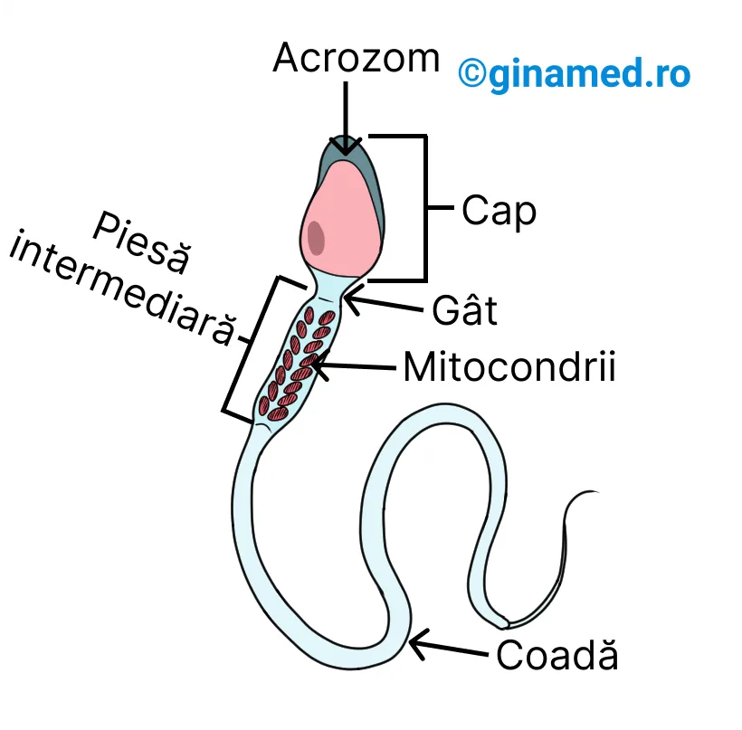
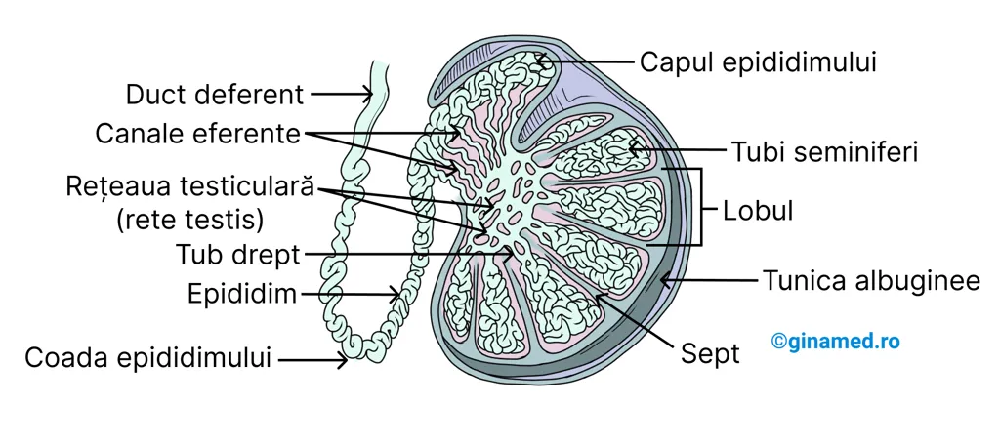
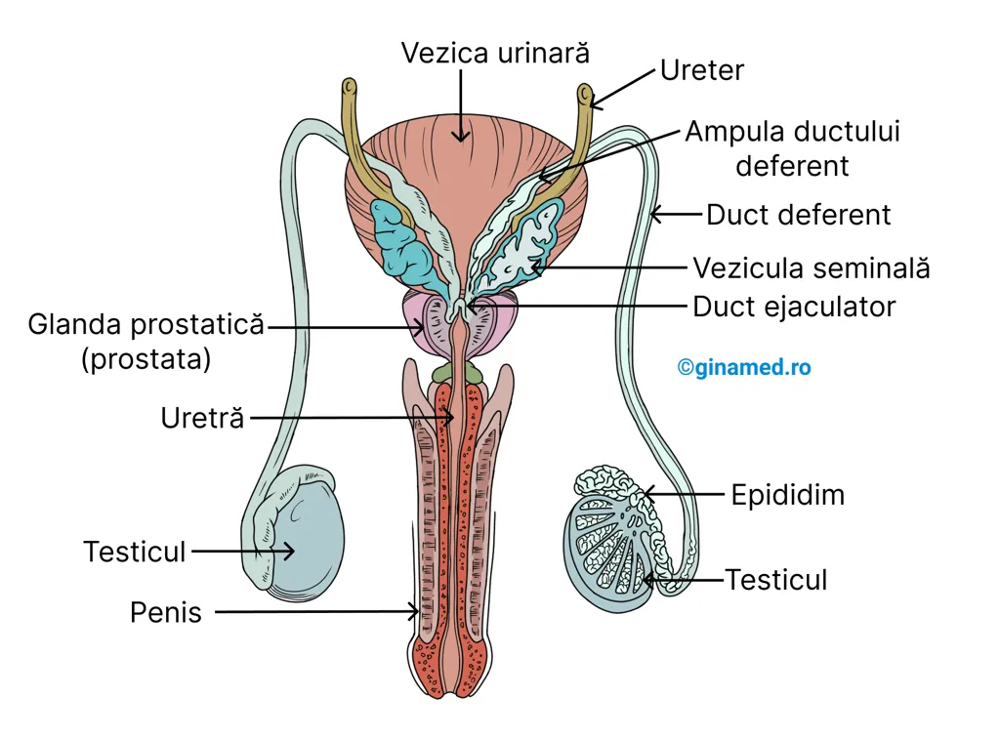

♂ Capitolul 22 – Sistemul Reproducător Masculin
Ghid complet pentru admiterea la Medicină – Barron's Biologie, Capitolul 22: Sistemul Reproducător Masculin.
Harta capitolului
Introducere · Testiculele · Scrotul · Dezvoltare · Spermatogeneză · Meioza · Spermatozoizi
Epididim · Duct deferent · Uretră · Veziculă seminală · Prostată · Glande bulbouretrale · Penis
FSH · LH · GnRH · Testosteron · Feedback negativ · Caractere sexuale secundare
Întrebări tip grilă · Explicații complete · Analiză progres
Rezumat rapid pentru examen
- Roluri sistem reproducător: producerea, stocarea, nutriția și transportul gameților masculini
- Testiculele: 2 organe ovalare (~5 cm lungime), dispuse în scrot; produc spermatozoizi și hormoni
- Scrotul: formațiune sacciformă suspendată sub perineu; mușchiul dartos asigură aspectul încrețit
- Temperatura scrotului: cu câteva grade mai scăzută față de cavitatea abdominală – necesară spermatogenezei
- Criptorhidia: necoborârea testiculelor → infertilitate; se tratează chirurgical
- Spermatogeneza: spermatogonie → spermatocit primar (2n) → 2 spermatocite secundare (n) → 4 spermatide (n) → 4 spermatozoizi
- Structura spermatozoidului: cap (acrozom + nucleu), gât, piesă intermediară (mitocondrii), coadă (flagel)
- Calea spermei: tubi seminiferi → rete testis → canale eferente → epididim → duct deferent → duct ejaculator → uretră
- Organe anexe: veziculă seminală (60% volum), prostată (30% volum), glande bulbouretrale
- Spermă: 2–5 mL ejaculat; ~20–100 milioane spermatozoizi/mL
- Hormoni: GnRH (hipotalamus) → FSH + LH (hipofiză anterioară) → testosteron (celule interstițiale Leydig)
- Testosteron: controlat de LH; produce și menține caracterele sexuale masculine; stimulează spermatogeneza
Fluxul spermei
🔬 Testiculele & Spermatogeneza
Introducere în sistemul reproducător masculin, structura testiculelor, scrotul, spermatogeneza și structura spermatozoizilor.
22.1. Introducere
Sistemul reproducător îndeplinește multiple roluri ce privesc celulele reproducătoare masculine (gameți), cum ar fi:
În alcătuirea sistemului reproducător masculin și feminin se întâlnesc structuri identice, cum ar fi:
- două organe de reproducere (gonade) – producătoare de gameți și hormoni;
- ducte – primesc și transportă gameți;
- glande și organe anexe – secretă lichide eliberate prin ducte;
- organe genitale externe – organe și glande auxiliare asociate procesului de reproducere.
22.2. Testiculele
Testiculele, organe masculine de reproducere, prezintă următoarele caracteristici:
- sunt în număr de două;
- au rolul de a produce spermatozoizi;
- intervin în reproducerea masculină prin producția de hormoni și spermatozoizi;
- testiculul: organ de formă ovalară, aplatizat;
- testiculul măsoară circa 5 cm lungime și 2,5 cm lățime;
- acestea sunt dispuse în scrot, care le protejează.
Scrotul
Scrotul este formațiune în formă de sac (sacciformă), ce prezintă pereți groși, cu straturi multiple (multistratificați), suspendată sub perineu și anterior anusului. Scrotul este divizat în două compartimente separate în care se află câte un testicul.
Separarea este marcată de rafeu (conform DEX, rafeul este o linie de joncțiune a două jumătăți simetrice ale unei formații anatomice sau ale unui organ.), o proeminență îngroșată aflată pe suprafața scrotală.
În profunzimea straturilor pielii scrotului este prezent un mușchi neted subțire, denumit mușchiul dartos. Prin contracția lui, suprafața scrotului capătă un aspect încrețit. Funcțiile scrotului sunt de a conține testiculele și de a le proteja.

Dezvoltarea testiculelor
Dezvoltarea testiculelor are loc încă din perioada fetală, în cavitatea abdominală, lângă rinichi. Testiculele coboară în scrot până la finalul lunii a șaptea de sarcină, prin traversarea musculaturii abdominale. După momentul nașterii, temperatura din scrot înregistrează o valoare cu câteva grade mai scăzută decât cea din cavitatea abdominală.
Odată ce testiculul traversează peretele abdominal, acestuia i se atașează vase de sânge, nervi și ductul deferent. Ductul deferent reprezintă o structură tubulară care pornește de la nivelul testiculelor. Ductul deferent, împreună cu structurile anterioare (vase de sânge, nervi) alcătuiesc cordonul spermatic.
Cele două compartimente ale scrotului sunt unite de cavitatea peritoneală prin intermediul canalului inghinal care străbate peritoneul. Acest canal reprezintă un punct de slabă rezistență în peretele abdominal și în peritoneu, putând constitui un loc în care se instalează herniile inghinale. Herniile constituie protruzii (alunecare, deplasare din poziția normală) ale oricărei structuri abdominale prin peretele abdominal.
În alcătuirea fiecărui testicul intră numeroși lobuli delimitați între ei prin țesut conjunctiv (sept). Aceștia sunt formați din numeroși tubi strâns încolăciți (contorți) care poartă numele de tubi seminiferi la nivelul cărora se produc spermatozoizii. Epiteliul tubilor seminiferi este format din:
Celulele interstițiale se interpun între tubii seminiferi și intervin în producția de hormoni sexuali masculini (androgeni), cuprinzând și testosteronul. La exterior, fiecare testicul este protejat de o capsulă conjunctivă.
Prin unirea tubilor seminiferi se formează un plex denumit rețeaua testiculară (rete testis). Din zona superioară a testiculelor pornesc multiple canale eferente care drenează rețeaua testiculară și ulterior pătrund într-un tub încolăcit, denumit epididim (capul epididimului, epididim, coada epididimului). La acest nivel, spermatozoizii capătă mobilitate și totodată sunt transportați către ductul deferent. Acesta transportă mai departe spermatozoizii către ductul ejaculator, în afara testiculului.
Spermatogeneza
Spermatogeneza reprezintă procesul prin care se formează spermatozoizii. Acest proces este inițiat în stratul cel mai extern al celulelor germinale din alcătuirea tubilor seminiferi.
Celulele primordiale (stem) denumite spermatogonii trec prin diviziuni mitotice în urma cărora se obțin celule denumite spermatocite primare (diploide, 2n, au 46 de cromozomi/celulă) care sunt împinse pe măsură ce se formează, către lumenul sau interiorul tubilor seminiferi.
Ulterior, spermatocitele primare trec printr-o primă fază a diviziunii meiotice în urma căreia se obțin dintr-un spermatocit primar, două spermatocite secundare (haploide, n, cu 23 de cromozomi/celulă). Urmează apoi faza a doua a meiozei în urma căreia are loc dublarea numărului de celule (rezultă 4 spermatide), însă numărul de cromozomi rămâne neschimbat (tot 23 de cromozomi/celulă). Spermatidele rezultate se maturează și duc la formarea spermatozoizilor din interiorul tubului seminifer.

Prima fază a diviziunii meiotice
| Faza I | Procesul |
|---|---|
| Profaza I | În complexul sinaptonemal, cromozomii omologi alcătuiesc o tetradă. Cromatidele acestor cromozomi se suprapun și formează chiasme. Segmentele de cromatide pot trece de pe una pe alta, contribuind astfel la variabilitatea genetică. |
| Metafaza I | Odată cu alinierea cromozomilor pereche în placa ecuatorială (metafazică), aceștia se grupează independent. |
| Anafaza I | Are loc separarea cromozomilor pereche și deplasarea lor către polii opuși ai celulei. Centromerii cromozomilor duplicați nu suferă procese de diviziune. |
| Telofaza I și citokineza | Are loc distribuirea egală a cromozomilor în cele două celule fiice rezultate. |
A doua fază a diviziunii meiotice
| Faza II | Procesul |
|---|---|
| Interfaza | Fază intermediară lipsită de replicarea ADN. |
| Profaza II | Are loc condensarea cromozomilor și deplasarea lor către centrul celulei. |
| Metafaza II | Alinierea centromerilor la placa ecuatorială. |
| Anafaza II | Clivarea centromerilor în urma căreia rezultă cromozomi care se deplasează către polii opuși. |
| Telofaza II și citokineza | Rezultă 4 celule fiice haploide, fiecare având jumătate din numărul de cromozomi (23) ai celulei mamă (46). |
Spermatozoizii
Regiunile spermatozoizilor sunt:

🏗️ Ducte & Organe Anexe
Căile sistemului reproducător masculin, organele anexe și rolul lor în formarea și transportul spermei.
22.3. Ducte și organe anexe
O serie de ducte și organe anexe intervin în realizarea funcțiilor fiziologice ale testiculelor prin care spermatozoizii sunt evacuați din organism și își realizează activitatea lor.
Căile sistemului reproducător masculin
Înainte de a fi evacuați în mediul extern, spermatozoizii ajunși la maturitate traversează un sistem de ducte care prezintă multiple subdiviziuni.
Epididimul
Prima de acest fel este epididimul, un tub alungit, răsucit și încolăcit, dispus în lungul marginii posterioare a testiculelor. Canalele eferente care au originea în rețeaua testiculară (rete testis), aduc în epididim spermatozoizii maturi, dar lipsiți de mobilitate. Legătura dintre tubii contorți și rețeaua testiculară este făcută prin intermediul tubilor drepți.
Porțiunea de început a epididimului se numește capul epididimului, iar porțiunea terminală, coada epididimului.

Ductul deferent
La ieșirea din epididim, spermatozoizii pătrund în ductul deferent (vas deferens). Rolul acestuia este de a propulsa și a conduce lichidul seminal provenit de la epididimul fiecărui testicul. Ductul deferent reprezintă o extensie în formă de tub a epididimului care traversează canalul inghinal către cavitatea abdominală.
La acest nivel, ductul deferent trece lateral de vezica urinară, spre marginea postero-superioară a glandei prostatice. Imediat înainte de a ajunge la aceasta, ductul deferent prezintă o dilatație denumită ampulă. La nivelul acesteia, cele două ducte deferente care provin de la fiecare testicul, se unesc cu ductele care vin de la veziculele seminale, formând ductele ejaculatoare. Sunt ducte relativ scurte care traversează prostata și ulterior își eliberează conținutul în uretră.
Uretra
Uretra este cuprinsă între vezica urinară și vârful penisului. Cele 3 porțiuni ale acesteia sunt:
Organe Anexe
Organele anexe ale sistemului reproducător masculin au rolul de a secreta fluide care sunt necesare în formarea spermei sau funcționează ca organe care asigură transportul ei în cursul copulației (actului sexual).
Sunt organe anexe (auxiliare): vezicula seminală, glanda prostatică (prostata), glandele bulbouretrale și penisul.

Vezicula seminală
- organ pereche format din structuri în formă de sac (sacciforme), drenate de unele ducte care funcționează ca ductul deferent;
- secretă și hormoni – prostaglandine care intră în compoziția spermei;
- asigură nutriția spermatozoizilor în cursul ejaculării prin secreția de fluide nutritive, în special fructoză;
- fluidul produs prezintă un caracter alcalin astfel încât să neutralizeze aciditatea dezvoltată în epididim;
- fluidul produs reprezintă circa 60% din volumul total al lichidului seminal din compoziția spermei.
Glanda prostatică (prostata)
- glandă unică;
- înconjoară uretra;
- secretă un fluid cu un caracter ușor alcalin care intervine în mobilitatea spermatozoizilor, neutralizând aciditatea naturală din vagin, dar și lichidul seminal (un mediu acid ar afecta mobilitatea spermatozoizilor);
- în alcătuirea sa intră fibre musculare netede cu rol de suport;
- creșterea ei în dimensiuni la vârstnici poate face mai dificil procesul de urinare;
- secreția produsă reprezintă circa 30% din volumul total al lichidului seminal.
Glandele bulbouretrale
- două glande mici;
- se află în apropierea penisului (la baza sa);
- se deschid în uretra peniană;
- secretă mucus lubrifiant al capătului penisului și substanțe alcaline care neutralizează aciditatea din vagin și activează spermatozoizii (ajută la mobilitatea spermatozoizilor).
Compoziția spermei
- spermatozoizi;
- produșii de secreție ai testiculelor;
- produșii de secreție ai veziculei seminale;
- produșii de secreție ai prostatei;
- produșii de secreție ai glandelor bulbouretrale.
Penisul
Penisul este un organ al actului sexual care intervine în micțiune (transportă urina) și copulație. Se împarte în:
Orificiul uretral extern este înconjurat de gland. Acesta la rândul său este înconjurat de un pliu de piele, denumit prepuț. Îndepărtarea lui se face chirurgical și procedeul poartă numele de circumcizie.
Corpul penisului, în cea mai mare parte a sa, este ocupat de 3 mase de țesut erectil și anume:
Țesutul erectil este alcătuit dintr-un labirint de canale vasculare separate de țesut conjunctiv și fibre musculare netede.
În cursul excitării sexuale, componenta parasimpatică a sistemului nervos eliberează impulsuri care duc la dilatarea arteriolelor din țesutul erectil, crescând semnificativ fluxul sanguin în aceste țesuturi și colabarea (turtirea) venelor. Se înregistrează o congestie (un aflux excesiv) cu sânge la nivelul rețelei vasculare și are loc erecția.
În cursul apogeului sexual, sperma traversează uretra și ajunge la orificiul uretral extern. După ce sperma a fost ejaculată, componenta simpatică a sistemului nervos eliberează impulsuri care duc la constricția arteriolelor, diminuând astfel aportul de sânge. Odată cu evacuarea sângelui din țesutul erectil pe cale venoasă, penisul devine flasc. Cât se mențin stimulii simpatici, vasoconstricția și starea flască persistă.
La nivelul căilor sistemului reproducător apar contracții peristaltice care intervin în deplasarea spermei din cursul ejaculării. Glandele anexe se contractă și evacuează produșii lor de secreție care contribuie la creșterea volumului spermei.
🧬 Hormonii Masculini
Reglarea hormonală a sistemului reproducător masculin: GnRH, FSH, LH și testosteron.
22.4. Hormonii masculini
Nu numai hormonii masculini intervin în procesul de reproducere masculin. Hipofiza anterioară intervine prin secreția a doi hormoni importanți:
Reglarea eliberării de FSH și LH este făcută de hipotalamus, prin secreția de hormon de eliberare a gonadotropinelor (Gonadotropin Releasing Hormone – GnRH). Secreția de GnRH favorizează eliberarea de FSH și LH hipofizar, determinând astfel creșterea concentrației lor în sânge. Alături de cei 2 hormoni hipofizari, GnRH este implicat într-un mecanism de feedback negativ cu scopul de a controla sinteza și secreția de testosteron.
Testosteronul
Testosteronul, hormon androgen, reprezintă un hormon sexual masculin sintetizat de către celulele interstițiale ale testiculelor și care prezintă următoarele caracteristici:
- controlul secreției sale este realizat de către LH;
- la făt – testosteronul exercită control asupra diferențierii țesuturilor specifice sexului masculin și intervine în coborârea testiculelor în scrot;
- produce și menține caracterele sexuale masculine;
- până la pubertate, producția de testosteron este scăzută.
Funcțiile testosteronului după pubertate
Rezumat – Reglarea hormonală
- GnRH (hipotalamus) → stimulează secreția de FSH și LH din hipofiza anterioară
- FSH → maturarea tubilor seminiferi + spermatogeneza
- LH → maturarea celulelor interstițiale Leydig → producție testosteron
- Testosteron → controlat de LH; feedback negativ asupra GnRH, FSH și LH
- La făt: testosteron → diferențierea sexuală + coborârea testiculelor în scrot
- După pubertate: spermatogeneză, caractere sexuale secundare, sinteză proteică, comportament sexual